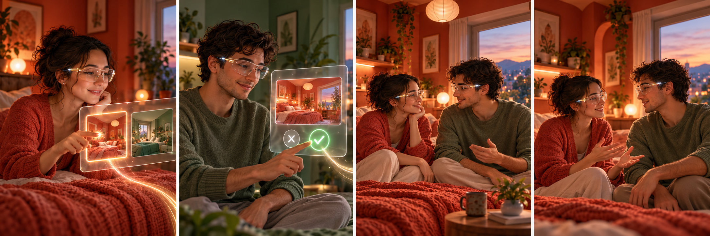

A 的真实空间 + B 的实时化身
选空间A′ 或 B′ 成为相会主场
见到彼此主场 AR，来访者进入 VR
一起生活看电影、靠近、并肩走动
感到回应动作与触觉逐步加入

交互流程 / 双端同步
交互流程
第一步：发起会话
A 佩戴好设备，从好友列表里选 B，再选定想要共处的场景（用 A 的房间还是 B 的房间做主场）。这几个操作都是很轻的几步选择。
第二步：邀请与确认
B 收到邀请通知，看到主场场景的预览缩略图。B 点同意，双方才开始进入同一空间；B 拒绝则流程结束，A 那边不会显示任何变化。
第三步：扫描与建模
B 同意后，系统开始扫描主场房间的三维结构和两个人的形象，完成空间 3D 重建和化身生成。这一步在后台自动跑，完成后才会正式进入共同空间。
第四步：共同在场与互动
建模完成后，A 留在真实房间里，以 AR 方式叠加 B 的化身；B 进入主场房间的 VR 重建。两端背景统一为同一个空间，两个人正常聊天、活动，就像坐在同一个房间里一样。
交互流程线框 / 双端同步
从邀请到安心结束
先选择主场，再由来访者决定是否进入；同意后才建模并启动双端空间，之后再叠加动作和触觉。
关键点：A′主场时，两端背景都只呈现 A′；A 在真实空间看 AR 来访者，B 在 A′ 的 VR 重建中看见两人。任何时候可退出，来访者拒绝则不进入主场。首版可用头显原生追踪、RGB-D/摄像头与 WebRTC 验证闭环。
01 / 此刻
从一句“来我这里”开始
逐步查看两个人怎么进入同一场景、怎样靠近彼此，以及每一步需要什么设备和研究证据。
彼此可辨认
实时、头像、录制与 AI 处理始终显示来源；不让视觉效果冒充人的当前意愿。
双方有控制权
触觉、录制和分享分项授权；接收方随时可关闭、忽略或退出。
弱网仍可相会
优先保住声音、身体姿态和共享对象状态，再逐级降低画质。
02 / 这场相会怎么运作
一间主场房间，两个不同视角
点击系统环节，查看空间、人物、动作和触觉怎样接上；也能看到每种传感器实际能提供什么。
A′ host room ↔ B′ host room选择一环查看 ↓
主场坐标系固定在 A′ 或 B′；来访者通过头部位置和朝向改变自己在重建空间里的视点。
空间建模 / 起步头显空间感知 + RGB-D
先用现有头显与深度摄像头建房间几何；毫米波补充动态/遮挡信息。
RoomPlan 能力边界 ↗人物外形 / 实时动作分开手机扫描 + 单目姿态
绕拍用于建立外形；实时动作由摄像头追踪骨架，分两条管线完成。
BlazePose 论文 ↗共在空间 / 产品参照Apple Spatial Persona
已支持共享场景、注视与指向信息；平台仍把参与者保持在彼此分开的虚拟位置。
空间 SharePlay 指引 ↗可穿戴显示 / 长期方向Meta Orion
展示 AR 眼镜的显示、手眼追踪和 EMG 输入方向；当前仍是原型参考。
Orion 官方说明 ↗03 / 研究从哪里来
把“像在身边”拆成可查的证据
覆盖空间临场、双向 AR/VR、建图、数字人、同步传输、社交触觉、梦境和神经科学。每条都有原文链接、与 Rove 的关系和适用边界。
100 条精选文献
本页按主题整理 100 条精选论文、数据论文和实时传输标准。8 条标记为“本地全文精读”；其余卡片依据出版方/会议页面和摘要概述相关性，团队正式引用前应核读研究方法、样本与结果。预印本和前沿条目会单独标明，清单不是系统综述。
04 / 研究与开发
先验证相会，再增加感官
每一步同时留下一个能体验的原型和一个能回答的问题。答案决定下一阶段该做什么。
Research / 研究轨
问题 → 证据 → 实验 → 论文
Development / 开发轨
需求 → 原型 → 系统 → 验证
↔
当前研究问题（工作版）
在异地伴侣共同看电影的任务里，“主场 AR + 来访 VR”与普通视频通话、共享虚拟房间相比，是否让两个人更自然地交谈、共同注意和感觉彼此在场？这些变化会不会增加眩晕、空间混淆或失控感？
先用访谈和低保真原型修正比较条件；正式样本量按主要指标、先导数据和统计功效确定，不预设固定人数。
打开团队执行版研究计划：前 10 周任务、实验指标、阶段门与远期支线 ↗
更远的设想
把“想动作”和“同一场梦”放在研究远端
继续追踪脑机接口、睡眠与神经科学；它们目前还不能作为 MR 原型的下一版功能承诺。
可做研究输入 · 远期表面肌电 / EMG
读到的是肌肉活动。想象一个动作而不实际收缩肌肉，通常要研究 EEG 脑机接口，不是简单换一套肌电传感器。
看运动想象文献 ↓基础研究 · 高不确定EEG 与梦境
脑电可用于研究睡眠阶段与醒后报告；目前没有证据支持准确读出连续梦境，更没有两人同步、可控梦境系统。
看睡眠数据论文 ↓神经科学工具 · 非消费接口光遗传学
2026 年诺贝尔奖表彰相关基础发现。它依赖光敏蛋白和特定神经元的基因处理，不能直接转成无穿戴的梦境通信技术。
Stanford 奖项说明 ↗Rove / 此刻这场相会
“你好像真的在我身边。”
第一场团队原型会先回答一个问题：A 和 B 能否自然地在 A′ 或 B′ 一起看电影、转头交谈，再伸手去找对方？